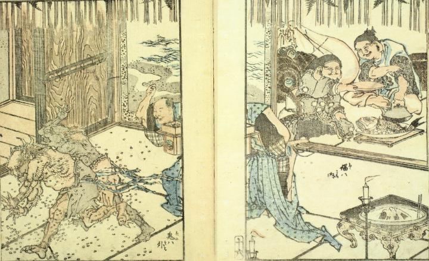

節分の豆撒きで追いやられる2体の鬼。2体とも腰巻のみを着けており、鋭い爪と2本の角が生えている。部屋の奥では恵比寿と大黒が鯛を肴に酒を酌み交わしている。
著作者：葛飾北斎／出典：親書誌：U426_nichibunken_0091：北齋画譜上巻；ホクサイガフジョウカン／日付：2005／資源識別子：U426_nichibunken_0091_0001_0000
Copyright (c)2010- International Research Center for Japanese Studies, Kyoto, Japan. All rights reserved.